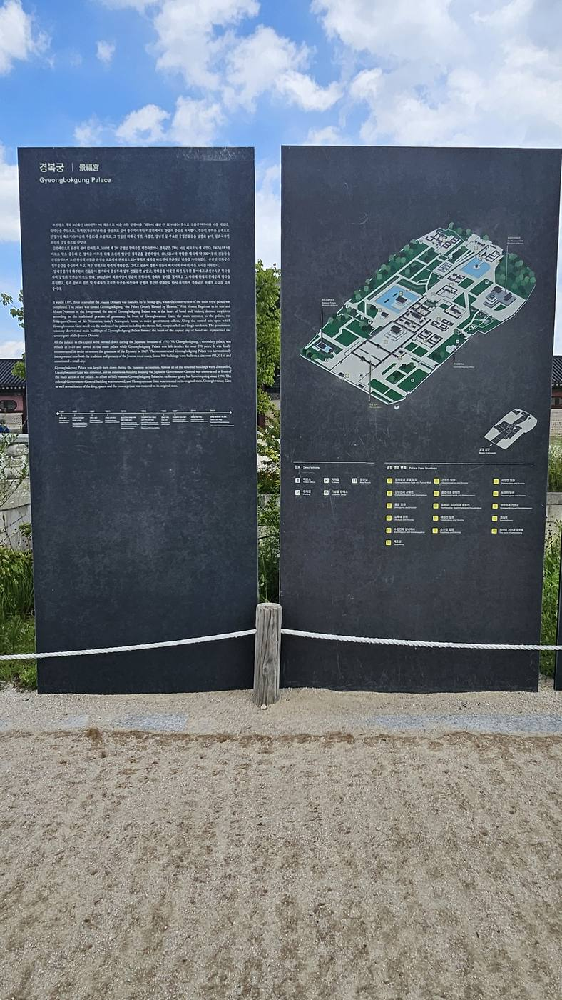
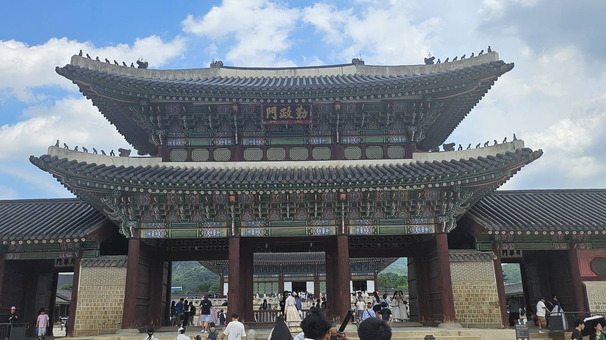
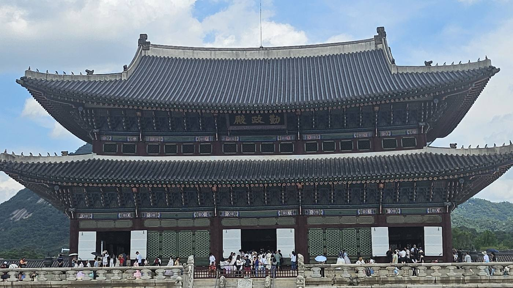
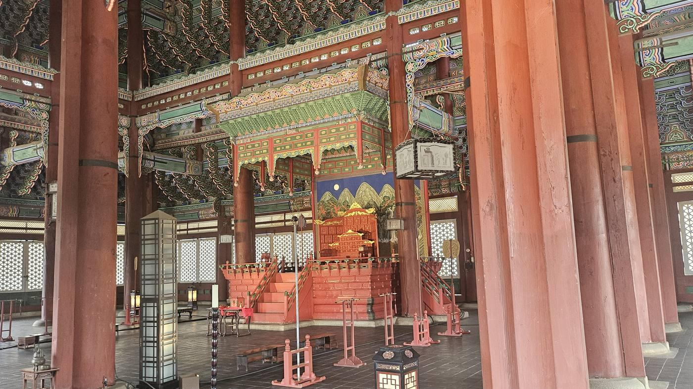
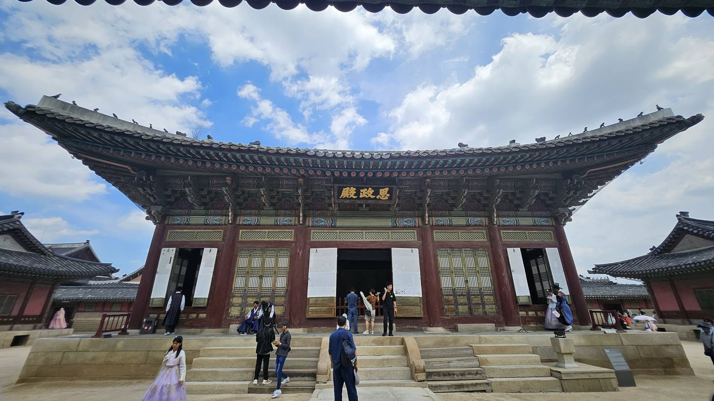
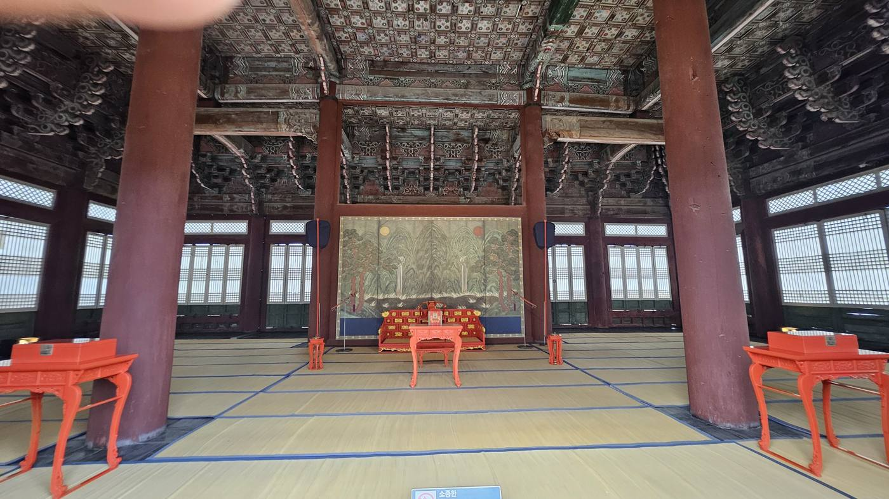
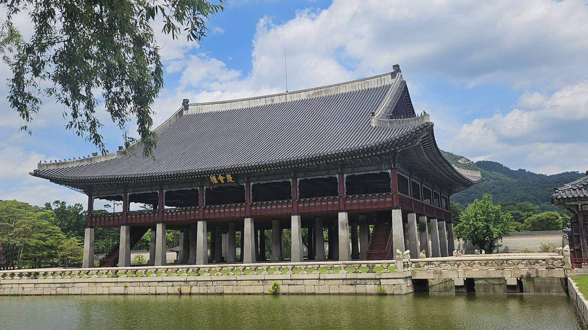
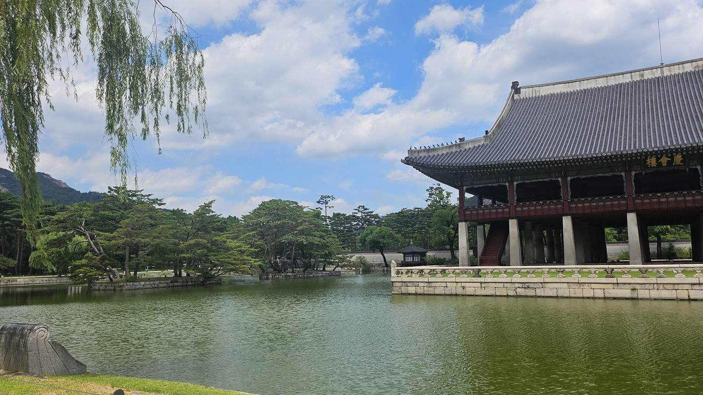
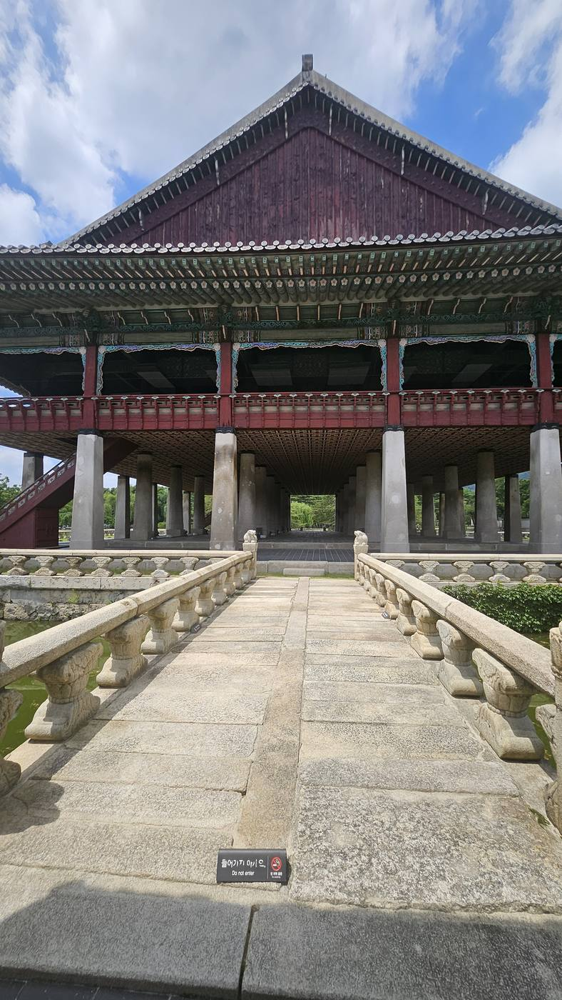

황산에서 시작된 한 장군의 이름은 오목대에서 야망이 되었고, 종묘에서는 정통성이 되었으며, 사직단에서는 마침내 백성의 나라가 되었다. 이제 그 나라를 다스릴 궁궐이 세워진다. 그러나 역사는 늘 아이러니하다. 조선을 상징하는 궁궐은 세워진 지 얼마 지나지 않아 피를 기억하게 되었고, 가장 화려한 궁궐은 가장 오랫동안 비어 있는 궁궐이 되었다.
왜 태조는 경복궁을 지었을까
1392년 개경에서 조선을 세운 태조는 즉위 3년째인 1394년 한양으로 도읍을 옮겼다. 종묘와 사직 공사에 이어 왕이 거처할 궁궐 공사가 시작됐고, 10개월의 공사 끝에 1395년 완공된 것이 경복궁이다. 이름을 지은 사람은 태조의 정치적 동반자 정도전이었다. 궁궐이 완공되자 태조가 잔치를 베풀며 이름을 지으라 명했고, 정도전은 《시경》의 "이미 술에 취하고 덕에 배부르니 군자 만년 동안 큰 복(景福)을 누리리라"는 구절에서 '경복궁'이라는 이름을 따왔다.
종묘, 사직단이 나라의 탄생을 상징했다면, 경복궁은 그 나라가 매일 살아 움직이는 공간이었다.
— 경복궁 창건의 의미궁궐 터를 정하는 과정에서 무학대사와 정도전 사이에 논쟁이 있었다고 전해진다. 무학대사는 인왕산을 주산으로 삼아 궁궐이 동쪽을 바라보게(동향) 하자고 주장했다. 북악산을 주산으로 삼으면 훗날 왕실에 골육상쟁이 일어날 것이라 봤다는 이야기다. 정도전은 반대했다. "성인은 남쪽을 바라보고 천하를 다스린다"는 유교적 군주관에 따라, 북악산을 주산으로 삼아 궁궐이 남쪽을 바라보게(남향) 해야 한다는 것이었다. 결과는 정도전의 승리였다. 유교 국가를 표방한 새 왕조로서는 명분이 그쪽에 있었다.
무학대사가 "내 말을 따르지 않으면 200년 안에 도성이 불바다가 되리라"고 탄식했고, 실제로 경복궁 완공 후 197년 만인 1592년 임진왜란으로 궁이 불탔다는 이야기가 널리 퍼져 있다. 하지만 이 예언 설화는 조선왕조실록 같은 정사(正史)가 아니라 후대에 전해진 야사(野史)에 등장하며, 여러 연구자들은 이 설화 자체가 16세기 이후 또는 임진왜란 이후에 만들어져 이미 벌어진 사건에 끼워 맞춰졌을 가능성이 크다고 본다.
북악산을 주산, 남산을 안산으로 삼아 궁궐터가 정해지자, 그 앞으로 관청가인 육조거리가 뻗어나갔다. 궁궐과 종묘·사직, 그리고 관청가로 이어지는 이 배치가 곧 새 왕조가 그린 국가 운영의 청사진이었다. 태조에게 경복궁은 단순한 거처가 아니라, "나는 이 나라를 이렇게 다스리겠다"는 선언 그 자체였다.

태조가 꿈꾼 나라는 어떤 모습이었을까
흥례문(興禮門)을 지나 금천을 건너면 근정문(勤政門)이 나온다. "정치에 부지런하라"는 이름의 이 문을 지나야 비로소 경복궁의 정전(正殿), 근정전(勤政殿) 앞마당에 닿는다. 여기서부터 북쪽으로 이어지는 축을 따라가면, 궁궐의 구조가 아니라 왕의 하루가 보인다. 그런데 이 다섯 공간은 그저 왕이 옮겨 다닌 자리가 아니다. 하나하나가 "나라를 다스리려면 이런 공간이 반드시 있어야 한다"는 정치적 계산 위에 놓인 자리다.

근정전 — 왕권을 보여주는 공간
근정전은 왕이 신하들의 하례를 받고 외국 사신을 맞는 자리다. 왕이 여기 앉아 있다는 사실 자체가 "이 나라의 정통성은 나에게 있다"는 시각적 증명이었다. 화려한 단청과 2층 월대, 좌우로 도열한 품계석 — 이 모든 장치는 취향의 문제가 아니라, 왕권을 눈으로 보여주기 위한 설계였다.


사정전 — 국가가 운영되는 공간
왕권을 보여주는 것과 나라를 실제로 운영하는 것은 다른 문제다. 사정전(思政殿)은 '깊이 생각하고 정치를 하라'는 뜻이다. 왕이 신하들과 매일 국정을 논의하고, 상소를 읽고, 정책을 결정하던 실무의 공간이었다. 평생을 말 위에서 호령하던 무장 이성계에게, 조선 건국의 브레인 정도전은 매일 아침·점심·저녁으로 책을 읽고 학자들과 토론하는 경연(經筵)을 요구했다. 이름 자체가 정도전이 지어준 잔소리에 가까웠던 셈이다.


강녕전 — 왕도 한 인간이라는 공간
강녕전(康寧殿)은 왕의 침전이다. 아무리 절대 권력을 가진 왕이라 해도, 잠을 자고 몸을 쉬어야 하는 한 사람이라는 사실은 달라지지 않는다. 국가 의례의 근정전, 실무의 사정전을 지나 이 자리에 이르러서야 비로소 '왕'이 아니라 '한 인간'의 공간이 나온다.
교태전 — 왕비와 왕통을 이어가는 공간
교태전(交泰殿)은 왕비의 침전이다. 조선에서 왕비의 가장 중요한 역할은 다음 왕을 낳는 일이었다. 왕조가 대를 이어가려면 이 공간이 반드시 있어야 했다 — 교태전은 개인의 침실이자, 왕통을 이어가는 국가적 기능을 가진 자리였다.
경회루 — 외교와 국가의 품격을 보여주는 공간
경회루(慶會樓)는 나라에 경사가 있거나 외국 사신이 왔을 때 연회를 베풀던 자리다. 지금으로 치면 국빈 만찬장에 가깝다. 연못 위에 세운 거대한 누각, 화강암 돌기둥의 규모는 그 자체로 "이 나라는 이런 건축을 해낼 수 있는 나라"라는 무언의 과시였다. 왕권이 근정전에서, 실무가 사정전에서, 사생활이 강녕전과 교태전에서 드러났다면, 경회루는 이 나라의 품격을 외부에 보여주는 창구였다.

경회루 연못에는 섬이 세 개 있다. 경회루가 올라앉은 동쪽의 큰 섬 하나와, 서쪽의 작은 섬 두 개다. 이 작은 섬 두 개는 '당주(當洲)'라 불리며 소나무가 심어져 있다. 도교의 신선사상에서 유래한 봉래·방장·영주, 이른바 삼신산(三神山)을 상징한다고 전해진다. 세종 때 대제학 변계량이 지은 글에도 이 세 섬을 삼신산에 빗댄 구절이 남아 있다. 연회를 베푸는 자리 하나에 이상향까지 통째로 옮겨놓은 셈이다.

왕의 하루 — 경복궁 중심축
왕이 나라를 다스리는 자리.
경연(經筵)과 국정 논의가 이루어진 자리.
하루를 마무리하는 사적 생활 공간.
내전의 가장 깊숙한 자리.
연회와 휴식, 국왕이 잠시 숨을 돌리던 자리.
근정전에서 교태전으로 갈수록 건물의 격식은 낮아지지만 사적인 밀도는 높아진다. 왕권 → 국정 → 사람 → 왕통 → 국격. 다섯 공간을 남에서 북으로 걸으며, 조선이 왕이라는 한 자리에 얼마나 많은 기능을 겹쳐 쌓았는지가 보인다.
왕조를 세운 궁궐, 왕은 왜 떠났을까
경복궁은 완성된 지 불과 3년 만에 피로 물들었다. 강녕전 동쪽 행각인 연생전은 태조가 아꼈던 막내아들 방석이 머물던 동궁 영역과 가까웠다. 1398년, 다섯째 아들 이방원이 '제1차 왕자의 난'을 일으켜 세자 방석을 죽인 곳이 이 경복궁 담장 밖이었다.
이 사건으로 큰 충격을 받은 태조는 둘째 아들 정종에게 왕위를 넘겼고, 정종은 피비린내 나는 한양이 싫다며 옛 수도 개경으로 궁을 옮겨버렸다. 태조가 온 이상을 담아 지은 경복궁은 완공된 지 몇 년 지나지 않아 텅 비었다. 그리고 1405년 한양으로 재천도한 태종은, 아버지가 지은 경복궁 대신 그 옆에 새로 창덕궁을 지어 그곳에 머물렀다.
경복궁은 왕자의 난을 보았다. 태조는 궁궐을 떠났고, 정종은 수도를 옮겼으며, 태종은 창덕궁을 선택했다. 이때부터 경복궁은 조선의 중심이 아니라, 조선의 상징으로 남게 된다.
— 왕자의 난 이후, 경복궁의 운명왕자의 난 이후 정치의 중심이 점차 다른 궁궐로 옮겨간 것은 경복궁의 상징성을 이해하는 핵심이다. 다만 태종이 경복궁을 완전히 버린 것은 아니다. 실록에 따르면 태종은 자신이 계속 창덕궁에만 머물면 후대 왕들도 경복궁을 외면하게 될까 우려해, 경복궁으로 이어할 뜻을 밝히고 대대적인 수리를 명하기도 했다. 지금 우리가 아는 거대한 돌기둥 위의 경회루도 이 무렵인 1412년, 연못을 크게 파고 새로 지은 것이다. 태조 때는 연못가에 작은 정자 하나가 있었을 뿐이었다.
세종은 즉위 초 아버지가 머물던 창덕궁에서 즉위했지만, 즉위 8년째인 1426년 경복궁으로 완전히 거처를 옮겨 이곳을 조선 유교 정치의 중심으로 다시 세웠다. 집현전이 설치되고 훈민정음이 만들어진 곳도 바로 이 경복궁이다. 왕조를 세운 궁궐이 완전히 버려진 것은 아니었지만, 한 번 흔들린 중심은 다시는 완전히 회복되지 못했다.
조선은 왜 경복궁을 버렸을까
흔히 창덕궁이 더 아름다워서 왕들이 그곳을 선호했다고 생각하기 쉽다. 하지만 그 이전에 있었던 것은 정치였다. 태종에게 경복궁은 자신이 이복동생들을 죽인 왕자의 난의 무대였고, 동시에 아버지 태조와 정적 정도전의 이상이 완벽하게 구현된 공간이었다. 태종에게는 자신만의 새로운 권력을 상징하는 공간이 필요했다. 창덕궁은 그 필요에 맞춰 지어진, 더 현실적인 궁궐이었다.
세종 이후로도 경복궁이 유일한 궁궐로 쓰인 것은 아니었다. 국가의 공식 의례는 경복궁에서, 왕의 일상생활과 정무는 창덕궁에서 치르는 '양궐 체제'가 자리 잡았고, 성종·연산군·중종 등 여러 왕이 창덕궁에서 많은 시간을 보냈다는 기록이 전해진다.
경복궁이 정궁의 지위를 갖고 있었음에도, 실제로 그 안에서 왕이 살아간 시간은 창덕궁에 크게 못 미쳤다. 이름뿐인 첫 번째 궁궐과, 실제로 조선을 움직인 궁궐이 따로 있었던 셈이다.
270년 동안 비어 있던 왕궁
궁궐은 남아 있었지만 왕은 없었다. 1592년 임진왜란이 터지면서 경복궁, 창덕궁, 창경궁이 모두 불탔다. 전쟁이 끝난 뒤 광해군은 규모가 작아 중건이 쉬운 창덕궁을 먼저 지었다(1610년). 경복궁은 터가 너무 넓어 재정이 감당할 수 없었고, "터가 흉하다"는 풍수적 기피까지 겹쳐 이후 흥선대원군이 중건을 시작하는 1865년까지, 270년 가까이 폐허로 버려졌다.
그동안 인조부터 철종까지, 조선의 왕들은 경복궁이 아니라 창덕궁에서 즉위하고 생활하고 숨을 거뒀다. 정조의 개혁 정치도, 순조·헌종 대의 세도정치도 모두 창덕궁이 무대였다. 목조 건물은 다 타서 재가 되고 기단석과 돌기둥만 어지럽게 널려 있던 이 넓은 터에는, 오직 경회루의 돌기둥만이 옛 영화의 흔적으로 남아 있었다. 영조와 정조가 이따금 이 폐허를 찾아 "잡초가 무성하고 여우와 토끼가 뛰어다닌다"며 탄식했다는 기록도 전해지지만, 국가 재정이 감당할 수 없어 그 이상의 손을 대지는 못했다.

흥선대원군은 왜 다시 경복궁을 세웠을까
이 장은 건축 이야기가 아니라 권력 이야기다. 1865년, 왕실의 권위를 세우려던 흥선대원군이 무리하게 당백전을 찍어내고 백성을 동원해가며 경복궁을 다시 지었다. 태조 때는 390여 칸의 비교적 아담한 궁궐이었던 것이, 1868년 7월 완공된 지금의 경복궁은 규모가 7,225칸에 달했다. 태조의 원형보다 약 18배 커진 것이다. 흥선대원군이 경복궁을 다시 세운 것은 왕권 회복과 국가 재건, 조선의 부활을 향한 정치적 승부수였다. 그는 궁궐을 다시 세운 것이 아니라, 왕권을 다시 세우려 했던 것이다.
1868년 7월 완공되자 고종은 창덕궁에서 경복궁으로 거처를 옮겼다. 270년 만의 귀환이었다. 하지만 그 영광도 오래가지 못했다. 1895년 경복궁 안 건청궁에서 명성황후가 시해되는 을미사변이 일어나자, 신변의 위협을 느낀 고종은 이듬해 러시아 공사관으로 몸을 피했다(아관파천). 이후 고종은 경복궁으로 돌아오지 않고 덕수궁(경운궁)에 머물렀고, 마지막 임금 순종은 1907년 다시 창덕궁으로 거처를 옮겼다. 그렇게 경복궁은 완공 40여 년 만에, 또다시 왕이 없는 궁궐이 됐다.
오늘 우리가 걷는 경복궁은 누구의 궁궐일까
황산에서 한 장수가 나라를 구했고,
오목대에서 더 큰 세상을 꿈꾸었으며,
종묘에서 그 꿈은 정통성을 얻었고,
사직단에서는 백성의 나라임을 선언했다.
그리고 지금, 경복궁에서는 그 꿈이 어떻게 현실이 되었는지,
또 왜 흔들릴 수밖에 없었는지를 마주한다.
풍수지리는 결국 결과로 판가름 나는 이야기다. 그런 눈으로 보면 경복궁의 역사는 석연치 않다. 완공 3년 만에 골육상쟁이 났고, 그 직후 정종이 궁을 비웠고, 태종은 아예 옆에 새 궁을 지었고, 임진왜란 이후로는 270년 가까이 폐허였다. 조선 왕조 500년 중 경복궁이 실제로 왕의 거처로 온전히 기능한 기간을 다 더해도, 창덕궁이 실질적 정궁 노릇을 한 기간에 크게 못 미친다. 태조가 새 왕조의 이상을 담아 지었지만, 정작 그 이상 안에서 편히 산 왕은 많지 않았던 셈이다.
그런데 지금은 다르다. 연간 수백만 명이 이 앞마당을 걷고, 한복을 빌려 입고 사진을 찍고, 근정전 앞에서 궁중 문화를 배운다. 왕조가 사라진 지 100년이 넘은 지금, 경복궁은 조선 500년을 통틀어 가장 많은 사람이 가장 자주 찾는 순간을 지나고 있는지도 모른다.
지금 우리가 걷는 돌길은 태조가 걸었던 길이고, 근정전의 뜰은 세종이 신하들과 국정을 논하던 자리이며, 경회루의 연못은 외국 사신을 맞이하던 공간이다. 그리고 이 궁궐은 왕자의 난의 비극과 임진왜란의 화마, 흥선대원군의 재건과 일제강점기의 훼손을 모두 견디며 오늘까지 살아남았다. 그래서 경복궁은 아름다운 궁궐이 아니라, 조선이라는 왕조의 시간을 가장 오래 기억하고 있는 역사 그 자체이다.
나라의 틀은 이렇게 완성되었다. 그러나 왕좌에 앉은 사람에게도, 끝내 채우지 못한 자리가 있었다. 그 빈자리를 찾아가는 곳이 정릉이었다.
답사 정보 / Visitor Info
- 위치
- 서울 종로구 사직로 161 (세종로)
- 입장
- 성인 3,000원 · 화~일 09:00~18:00(계절별 변동) · 월요일 휴관
- 소요
- 주요 전각·경회루 포함 약 2~3시간
- 창건/중건
- 1395년(태조 4) 창건 · 1868년(고종 5) 흥선대원군 중건
- 연계
- 창덕궁(도보 약 20분) — 경복궁과 함께 '양궐 체제'를 비교 답사하기 좋은 코스